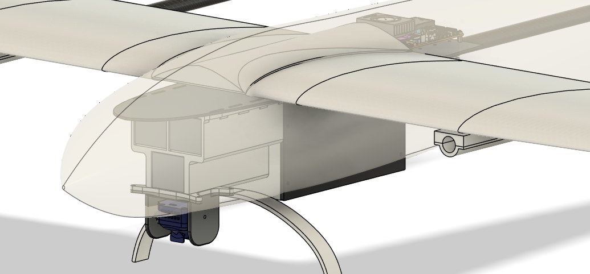
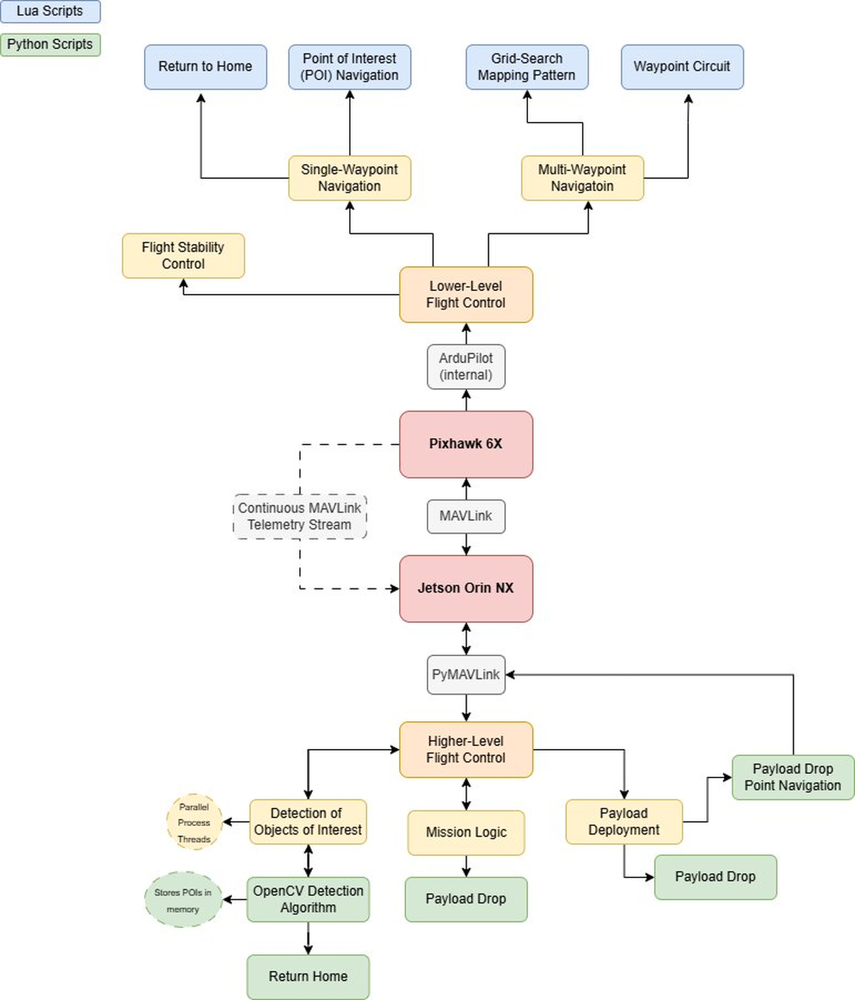
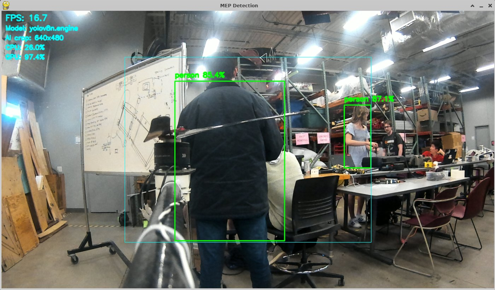
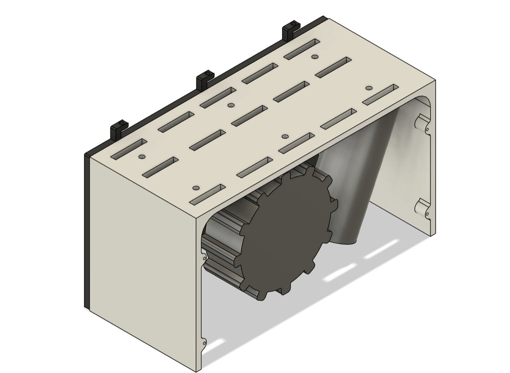

Wing and cruise design
The team used first-order wing loading, stall-speed, drag, and energy calculations before comparing propulsion and endurance choices in eCalc.
Vehicle design documentation
MeadowHawk is a systems-engineering project: airframe, propulsion, electrical power, flight control, autonomy, communications, perception, payload delivery, and ground operations must work together as one reliable aircraft.
Four vertical lift motors provide takeoff, hover, and landing capability. A separate rear-mounted motor provides forward thrust in fixed-wing flight. This arrangement avoids dependence on a runway while offering better cruise efficiency than a pure multirotor.
The system is organized around a Pixhawk 6X flight controller, an NVIDIA Jetson Orin NX companion computer, redundant communications links, a downward-facing camera, and a modular payload bay near the aircraft center of gravity.

The fixed-wing platform carries the weight of the lift system, batteries, avionics, companion computer, camera, and payload while remaining practical to manufacture, transport, assemble, and repair.
The team used first-order wing loading, stall-speed, drag, and energy calculations before comparing propulsion and endurance choices in eCalc.
Four lift motors are mounted around the aircraft center of gravity. The current test configuration uses an X-frame geometry following early flight-test corrections.
The structure was divided into manufacturable assemblies and revised as mass estimates, subsystem packaging, wiring, and structural loads became better understood.

The lift and cruise systems have different operating requirements. Lift propulsion must provide controllable thrust margin at low airspeed, while the cruise system is selected around fixed-wing thrust, propeller pitch speed, current draw, and endurance.
Configuration note: the final competition motor and propeller combination should be updated here after the team freezes the competition configuration.
The Pixhawk handles flight stabilization and low-level control. The Jetson executes higher-level mission and perception software, communicating with the autopilot through MAVLink.
ArduPlane QuadPlane firmware provides VTOL modes, autonomous missions, guided navigation, return-to-launch behavior, and safety failsafes. Mission Planner is used for configuration, mission planning, telemetry, and log review.
The NVIDIA Jetson Orin NX runs higher-level C++ and Python software, coordinates mission states, receives vehicle telemetry, and supports computer-vision processing.
ExpressLRS provides the safety pilot's manual takeover link and telemetry capability. A separate 915 MHz telemetry radio supplies a dedicated ground-station connection.
Software-in-the-loop testing with ArduPilot, Gazebo, and Mission Planner allows the team to test mission logic, network connections, arming behavior, and waypoint navigation before physical flight.

The mission system must identify relevant targets, estimate their locations, and deliver the correct relief object without destabilizing the aircraft.

The e-Con eCam25 CONUX camera and Jetson companion computer support aerial image collection and object detection. Training and validation data include tent and mannequin targets under varied altitude, lighting, motion, and background conditions.

The payload mechanism is placed near the center of gravity so that loading and release have a limited effect on trim. The system is designed to deploy the competition relief objects under autonomous command.
The team combines conservative calculations, simulation, component testing, staged ground tests, MEP flights, MeadowHawk flights, telemetry review, and configuration control. Manual takeover, return modes, geofencing, flight-mode selection, and preflight procedures are treated as part of the aircraft design rather than as afterthoughts.
See the testing record